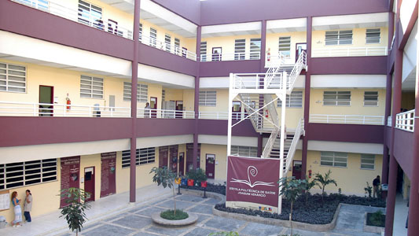

A gestão da EPT integral e integrada em algumas experiências concretas
Como vimos em algumas unidades temáticas anteriores, a concepção de gestão, adotada prioritariamente por uma comunidade escolar, é objetivada no Projeto-Político Pedagógico (PPP) da escola e nos currículos dos cursos ofertados por ela. Obviamente que tal adoção não é estática e, como observamos neste capítulo, seu conteúdo não se refere apenas àquilo que pode ser lido expressamente nos documentos. A partir de um olhar que considere os valores estruturais presentes, vamos observar um caso de escola técnica no Brasil, localizando os aspectos relativos à gestão. Em seguida, proporemos um exercício de análise e reflexão.
O caso da Escola Politécnica de Saúde Joaquim Venâncio (EPSJV)
A EPSJV é uma escola que acumula quatro décadas de experiência em Educação Profissional em Saúde no Brasil, sempre pautada pela perspectiva integral e integrada. Foi palco de inúmeros debates a respeito do tema desde quando começou a elaborar seu projeto de educação politécnica, buscando fundamentar-se no que hoje conhecemos como formação humana integral.

Título: Escola Politécnica de Saúde Joaquim Venâncio, Rio de Janeiro
Fonte: EPSJV/FIOCRUZ (2017).
Elaboração: FIOCRUZ (2017).
O PPP da EPSJV, alicerçado nos princípios da politecnia, constrói-se “a partir de reflexões que não ignoram as contradições encontradas na materialidade do trabalho em saúde” (EPSJV, 2005, p. 59) e entendendo ser a EPT “luta entre projetos de sociedade” (EPSJV, 2005, p. 59). Nesse sentido, há três grandes eixos que organizam esse PPP, sendo eles: (1) educação como prática social, (2) trabalho como princípio educativo e (3) pesquisa como princípio educativo. À sua maneira, e refletindo suas condições de produção, a comunidade da EPSJV expressa nessas afirmações uma ideia de EPT integral e integrada.
Articulado a essa ideia, o PPP em questão apresenta a concepção de “gestão participativa” como orientadora das práticas administrativas da escola. Tal concepção é assim enunciada:
Na Escola Politécnica, assim como em toda a Fiocruz, a gestão é participativa. Na prática, isso significa que as decisões são tomadas após deliberação em colegiados, conselhos e discussão em Câmaras Técnicas. O diretor da unidades é eleito por voto direto, assim como os coordenadores de laboratórios
No interior do aparelho escolar, verificamos órgãos gestores que mobilizam o aspecto participativo da administração, cada um com função específica, sendo eles: Conselho Deliberativo, Câmaras Técnicas, Assembleia Geral, Colegiados, Representação dos Trabalhadores da EPSJV (Reprepoli) e Grêmio Estudantil. Interessante observar que o órgão máximo de deliberação da escola é a Assembleia Geral, com previsão de reuniões ordinárias para discussão de assuntos estratégicos. Além disso, o Reprepoli e o Grêmio Estudantil possuem autonomia de organização e contribuem para uma gestão compartilhada, compondo conselhos e câmaras. A seguir, conheça um pouco da Gestão Participativa da Escola Politécnica de Saúde Joaquim Venâncio. Não esqueça de consultar o site oficial para ler o texto integral.
Título: Gestão Participativa da Escola Politécnica de Saúde Joaquim Venâncio (EPSJV)
Fonte: EPSJV (2005); Gescom (2024b); Gescom (2024c); Schüler (2013a); Schüler (2013b); Schüler (2013c); Schüler (2013d); Schüler (2013e); Schüler (2013f).
Elaboração: Prosa (2025k).
Como vimos, é certo que uma análise que não se restrinja à superficialidade do aspecto institucional ou do funcionamento do aparelho deve ir a fundo na observação dos valores estruturais que regem todas as determinações, por exemplo, de um PPP. Isso envolve conhecer a história da instituição e lançar mão de instrumentos críticos de análise da realidade escolar. O vínculo histórico da EPSJV com as lutas populares pelo direito à educação e à saúde no Brasil contribui para pensarmos a relação da proposta pedagógica em questão com as reivindicações democráticas brasileiras, assim como auxiliam a localizar limites. Seja como for, é possível observar (no caso aqui apresentado) aspectos do que poderíamos denominar “gestão integral” da EPT, questão que será aprofundada em capítulos posteriores.
Exercício: gestão da escola e EPT
Buscando desenvolver uma análise semelhante a que fizemos no estudo de caso acima, examine os dois seguintes casos de organização e oferta da EPT, refletindo sobre a questão indicada, que servirá como geradora:
Caso 1: a oferta da EPT por meio de parceria entre a Secretaria Estadual de Educação do Estado do Paraná (Seed-PR) e uma empresa privada, contrato de prestação de serviços firmado em 2021.
Questão geradora: como se dá a participação docente nas tarefas administrativas e a que concepção de EPT ela corresponde?
Indicação de leitura: "A Contrarreforma do Ensino Médio e a Educação Profissional no Paraná: a oferta privada de componentes curriculares da escola pública", de Gerva (2023) – Leia a introdução; e as seções 4.2 e 4.3.
Caso 2: currículo integrado na perspectiva da educação inovadora: o caso do Campus Jacarezinho do Instituto Federal de Educação, Ciência e Tecnologia do Paraná (IFPR).
Questões geradoras: quais as relações entre a inovação declarada pelo campus Jacarezinho e a perspectiva politécnica? Quais os aspectos mais relevantes da gestão escolar nessa experiência?
Indicação de leitura: "As Unidades Curriculares (UC) como Inovação na Educação: Experiências de gestão, história e politecnia" (capítulo 1), de Fiorucci e Corrêa (2018).
Indicação de navegação: site do Campus Jacarezinho do IFPR
Sugerimos que você registre suas respostas em seu Memorial e/ou siga as orientações de seu tutor.
Com este capítulo, buscamos apresentar a concepção de EPT integral e integrada e os princípios da educação politécnica. Os conceitos de modo de produção e unidade contraditória nos permitiram visualizar a instituição escolar a partir de distintas perspectivas. Vimos que é possível encarar a escola como um aparelho, remetendo ao seu funcionamento cotidiano, ou como uma estrutura, em seus vínculos com a totalidade social e reprodutora das contradições da sociedade. A educação politécnica, alternativamente, nos desafia a pensar um modelo educacional construído sobre bases estruturais diferentes da capitalista, fundada na divisão entre trabalho manual e trabalho intelectual e, portanto, que implica outro tipo de aparelho escolar.